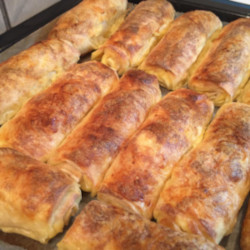

PITA

This classic tyropita recipe is a Greek feta cheese pie made with layers of crispy phyllo and a simple filling of feta cheese. You don't need anything more!
Ingredients:
- 14 ounces feta cheese, crumbled
- 2 large eggs
- 10 sheets phyllo dough, thawed if frozen
- 1/2 cup olive oil
Steps:
- Preheat the oven to 350 degrees F (175 degrees C). Grease two 9-inch round cake pans.
- Mix feta cheese and eggs together in a bowl for the filling.
- Lay one sheet of phyllo on a work surface and brush liberally with olive oil. Top with another sheet and brush again with oil. Repeat for a total of four sheets, but do not brush the top of the fourth sheet. Transfer the stack of oiled sheets to one of the prepared cake pans. Drape over the bottom of the pan, trying not to be too perfect about it; you want some folds and wrinkles in the phyllo.
- Spread 1/2 of the filling over the phyllo in an even layer. Fold the overhanging phyllo over the filling, again letting natural folds and wrinkles occur. Loosely lay one sheet of phyllo over the top, brush with oil, and use the oiled brush to pat down the sides all around the circumference of the cake pan.
- Bake the pie in the preheated oven until the tops are a deep golden brown, 45 to 55 minutes. Let cool slightly before slicing. Serve warm or at room temperature.